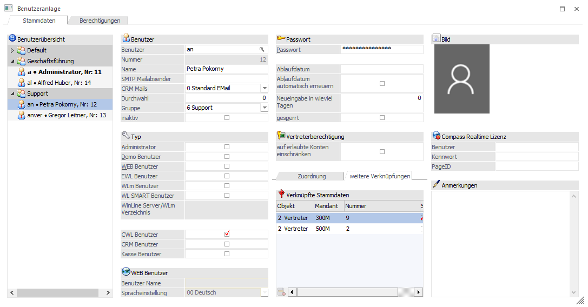

Im
1 WinLine Admin-Programm
1 BENUTZER und dort
1 Benutzeranlage
werden Vertreter für den Mandanten 300M (500M) mit folgenden drei WinLine Benutzern verknüpft:
ü Benutzer "an - Petra Pokorny" wird im Bereich "weitere Verknüpfung" mit Vertreter Nr. "9 Petra Pokorny" für Mandant 300M verbunden (Standard). Für Mandant 500M wird der Benutzer mit Vertreter Nr. "2" verbunden.

ü Benutzer "anver - Gregor Leitner" wird im Bereich "Verknüpfung" auf identische Art und Weise mit Vertreter "8 Gregor Leitner" für Mandant 300M verbunden (Standard). Für Mandant 500M wird der Benutzer mit Vertreter "1" verbunden.
ü Benutzer "a - Administrator" wird im Bereich "Verknüpfungen" analog dazu mit Vertreter "1 Johann Maier" für Mandant 300M (Standard) verbunden. Für Mandant 500M wird der Benutzer mit Vertreter "3" verbunden.